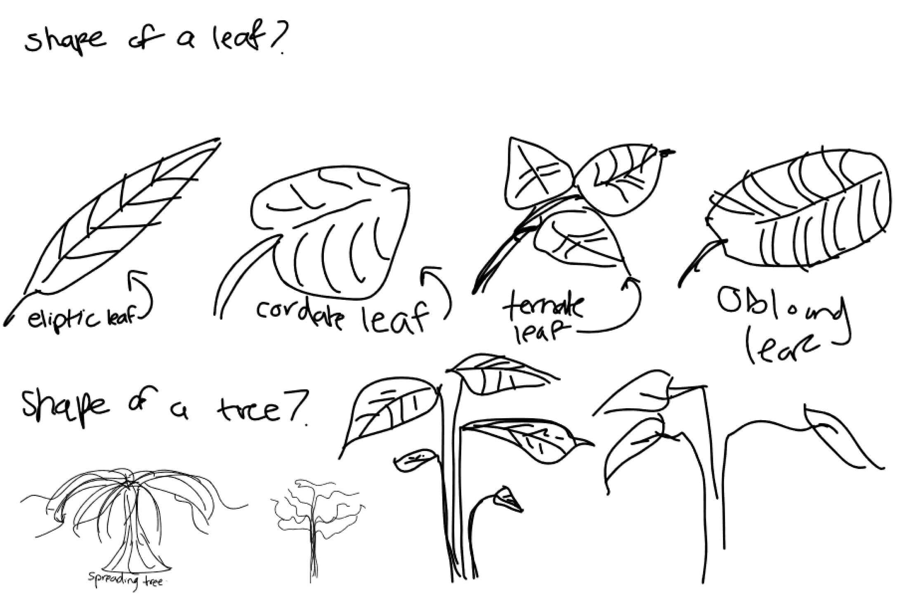
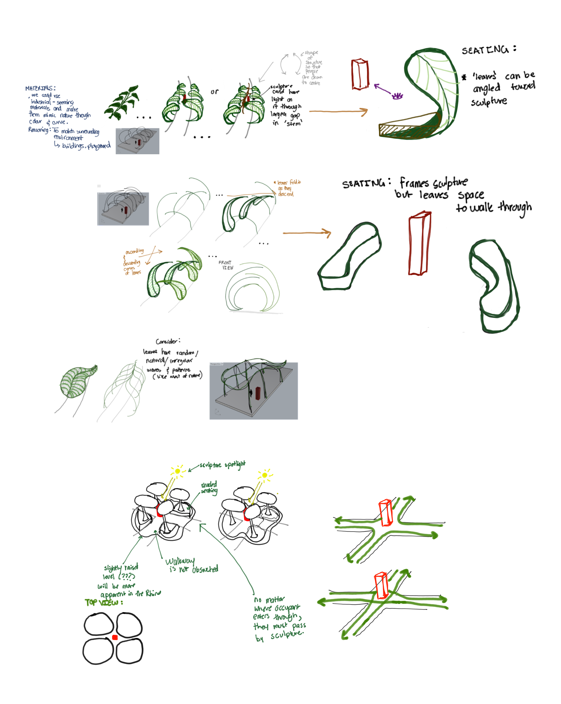
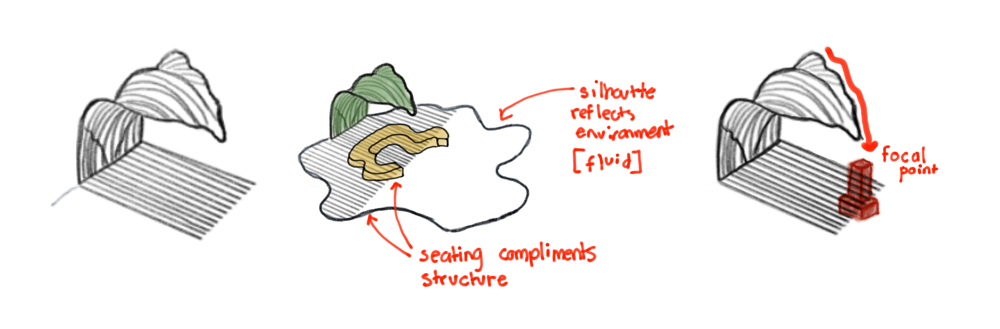
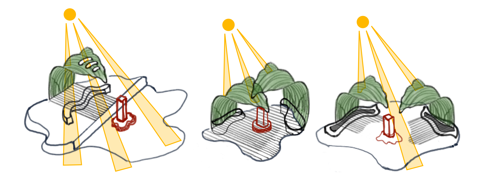
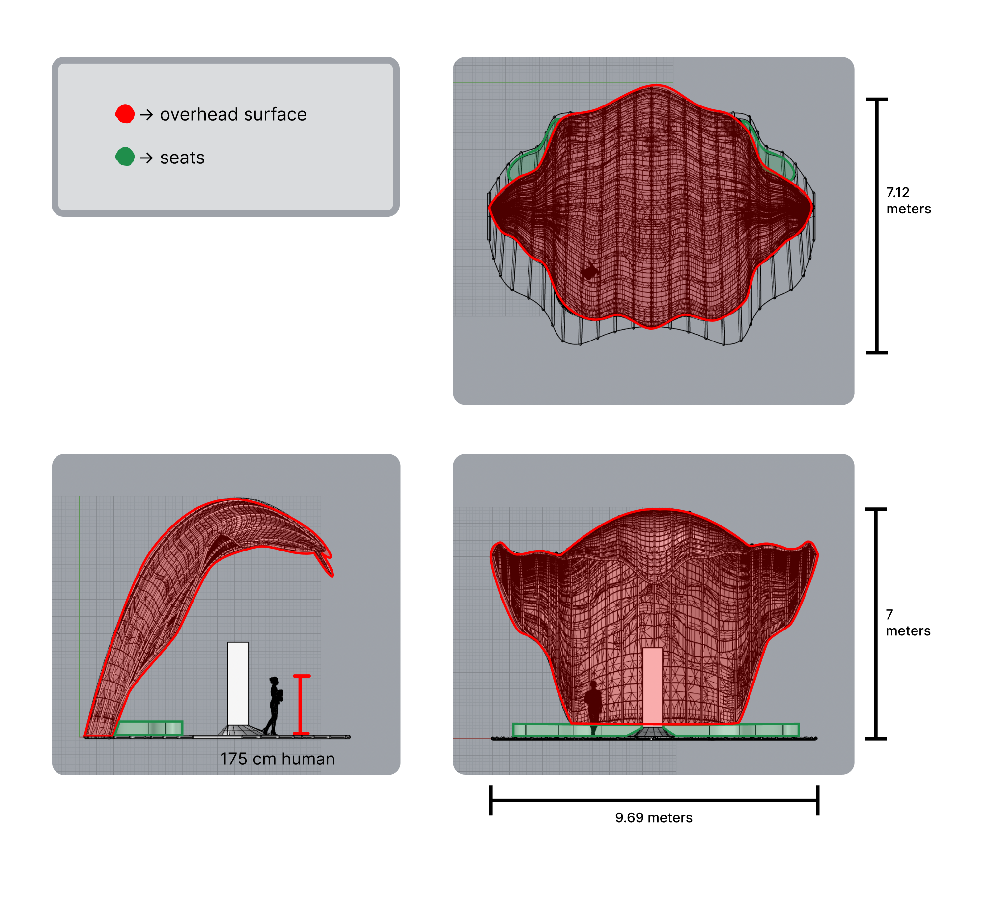
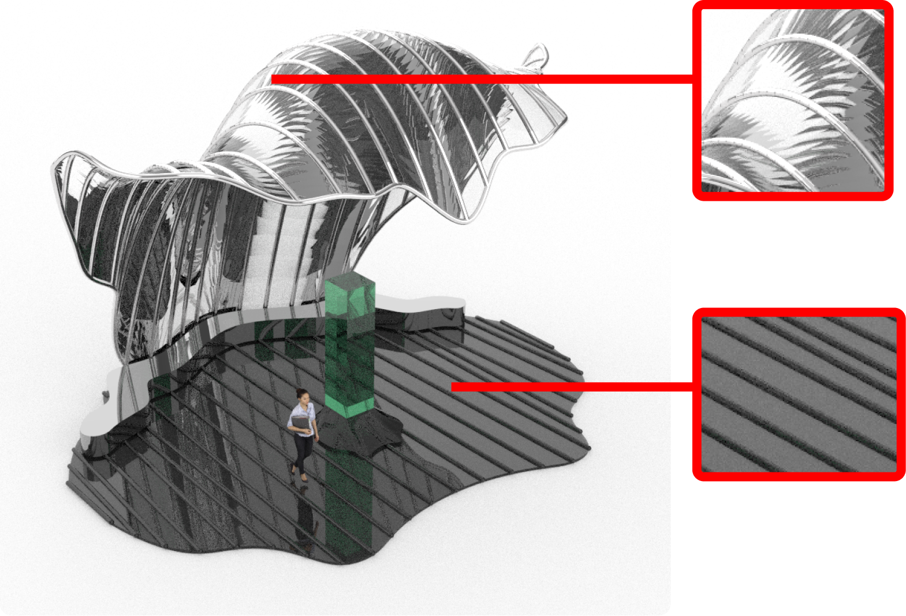

This pavillion explores spatial design concepts and was a project I worked on alongside my partner, Emily Xu.
It is a proposed design for a structure located within Holland Park,
created with the goal of showcasing an art sculpture
The focal point of this project is to explore propagation based
parametric systems, using Rhino and Grasshopper as visual programming environments.
A necessary initial step in developing our plans for the pavilion
was to scope out the area, surroundings, and location of Holland park.
We assessed certain structures central to the park and considered how our
pavilion may exist in harmony with these existing compositions.
These pre-existing structures include flower sculptures throughout the
area which embrace the parks environment, surrounded by trees and nature.
The metal sculptures mirror the natural shapes nearby, acting as a bridge
between the towering city structures and the lush park greenery.
Our brainstorming process began by exploring various natural and organic form such as trees, leaves, and other plants. We narrowed our scope down to leaves, as the simple and fluid shape would complement the shape of the flower petals appearing throughout the park's sculptures.
Further design exploration included consideration of the pavilions location within the park, structure circulation, art sculpture placement, and materials we would potentially use.
We settled on situating the pavilion in a spacious grassy section close to the park's center. This patch exists near fountains, a decorated pond of water, and open pathways which surround it. The pavilion would be oriented toward the central circular area, inviting prospective visitors into the heart of the park.

We decided upon the design of a wavy pavilion with an organic, fluid appearance. This design seamlessly integrates with the surrounding elements of water, greenery, and existing structures, providing a spacious area for both leisure and art sculpture observation.
With the base design finalized, we brainstormed various lighting iterations to find the ideal fit for our final concept. This included experimenting with overhead cutouts, layered structures, and spacing multiple elements. We found that cutouts did not feel cohesive with our design goals and that layering limited the amount of natural light within the pavilion. While spacing structures facilitated light entry, it interfered with our goal for open circulation and accessible entry/exit points.

We decided to pivot into the use of materials to address the
concern of designing for ample sunlight and circulation.
We chose two main materials to construct our pavilion with,
glass and metal. The glass not only provides a translucent sheet
of coverage that would allow sunlight to enter and bounce off,
it also aids in representing elements of water and life within
the park. Additionally, the use of metal symbolizes the nearby
urban architecture surrounding the park and
harmonizes with the flower sculptures made of light grey metal.
The last phase involved fine-tuning the design with chosen materials
and location in mind. This included expanding the overhead surface
for greater coverage over the art sculpture to protect it from
weather variables such as rain, hail, or snow. We also incorporated
extra curvature into its silhouette and applied a similar approach
to the pavilion's base, achieving a more seamless and unified appearance.
We used
this
tutorial to help us translate our ideas into Rhino and Grasshopper.
The Wavy Pavilion is a structure with an abstract form that can be subjectively interpreted as a leaf or a wave. The pavilion offers a sheltered space for visitors to relax or appreciate their surroundings, all while shielding them from the frequent rainfall of Metro Vancouver. Its design and translucent material correspond with the climate, enabling occupants to both experience and admire the rainfall.

While the pavilion's curved roof extends to cover most of the area from rainfall, there’s also room for walking and seating available to visitors.
The upper surface is made of light grey glass, which allows sunlight to filter through and illuminate the space containing the art sculpture and majority of the seating. In contrast, the base is created using dark grey glass, providing a clear distinction from the arched roof. There are also metal rods which reinforce the overhead surface and base, they are made of galvanized steel to prevent rusting in rainy conditions. To enhance the overall color coordination of each surface, the arched rods feature a lighter grey steel, while the base rods are a darker grey. Additionally, the bench shares the same shade as the arched rods positioned behind it, while the sculpture sits atop a glass pedestal that matches the color of the base. As for the art sculpture itself, we chose an aquamarine color with hues of blue and green to represent nearby water and shrubbery.
Pathways leading into and around the pavilion are clear, simple, and open. Visitors can enter directly through the front and can freely navigate around the art sculpture, enjoying three meters of space between the seating area and the sculpture.

The Wavy Pavilion follows a clear axis of symmetry that is marked
by a dip in the overhead surface, forming a focal
point at the center of the structure which is especially apparent
when a visitor approaches from the front entrance.
This principle of symmetry is reinforced through the pavilion’s
location within the park, as it is directly centered and aligns
with a metal lotus sculpture closer to the middle of the park.
There also exists a display of hierarchy through the chosen colors
and shapes, the rectangular aquamarine qualities of the sculpture
starkly contrast with the monotone, curved, metallic tones
throughout the rest of the pavilion.
Repetition is another design principle demonstrated through
the consistent use of repeating metal rods, providing an organized,
uniform, and cohesive aesthetic throughout the entire structure.

The parametric pattern which was created in grasshopper is easily modified through changin certain variables within the diagram as shown below.
Below you will see some common entry points and viewing angles within the pavillion, alongside a final flythrough video around the structure.